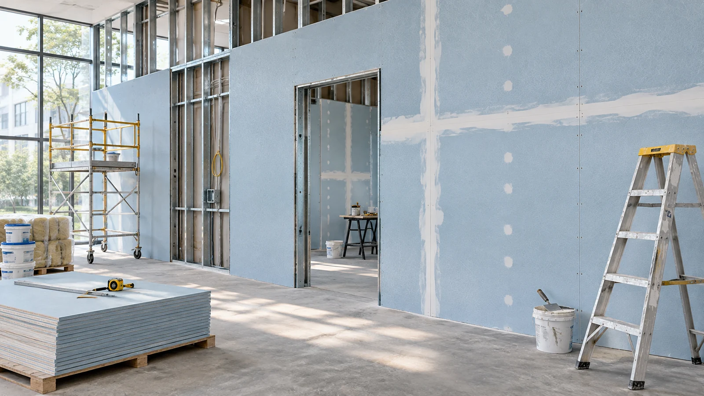
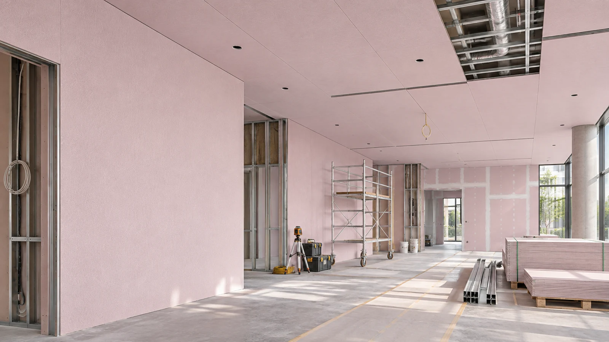
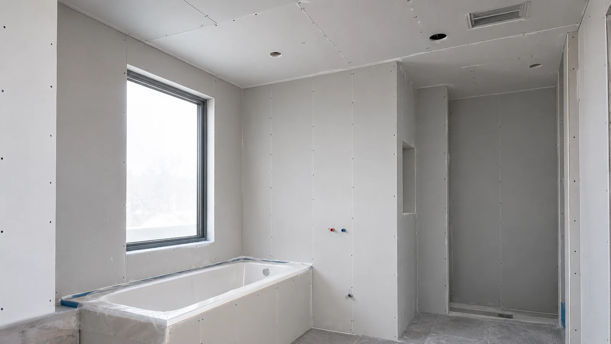
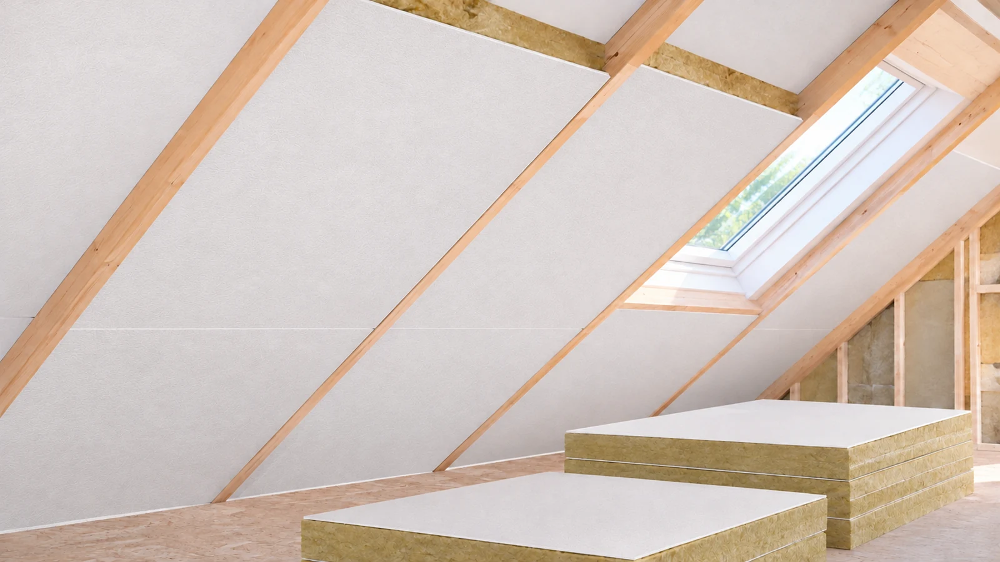
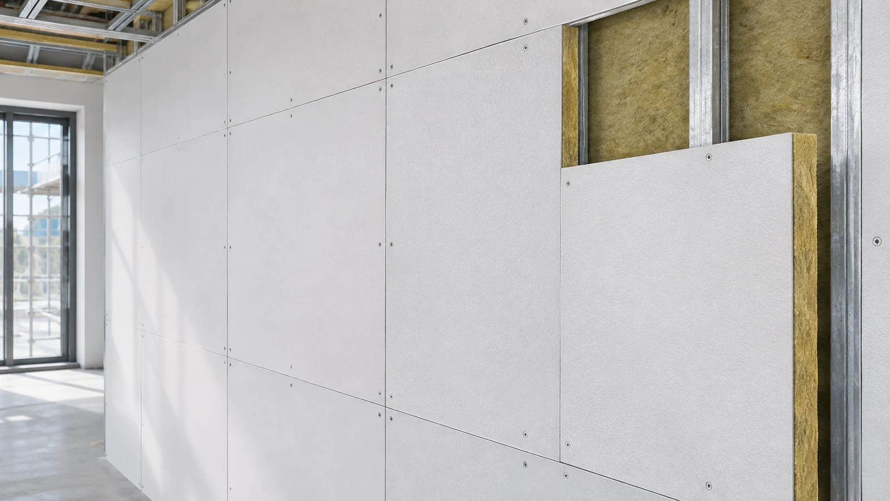
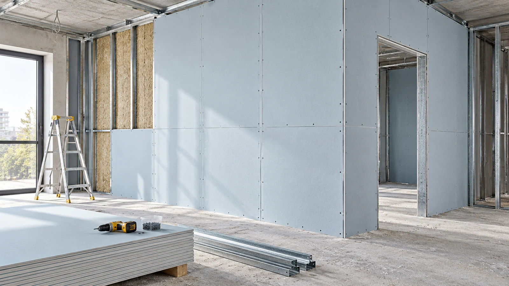
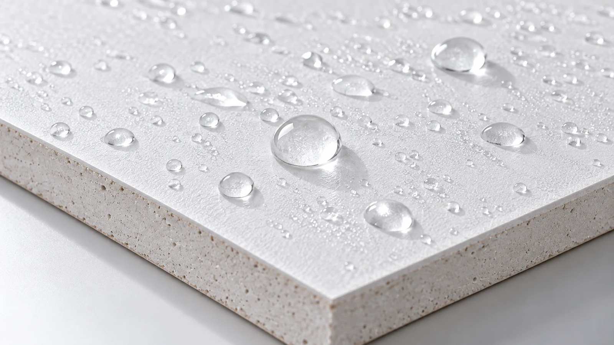
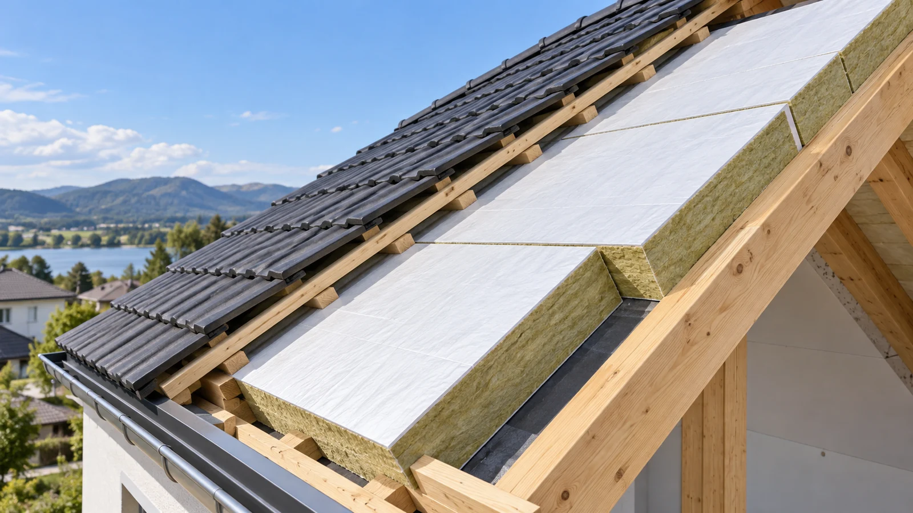
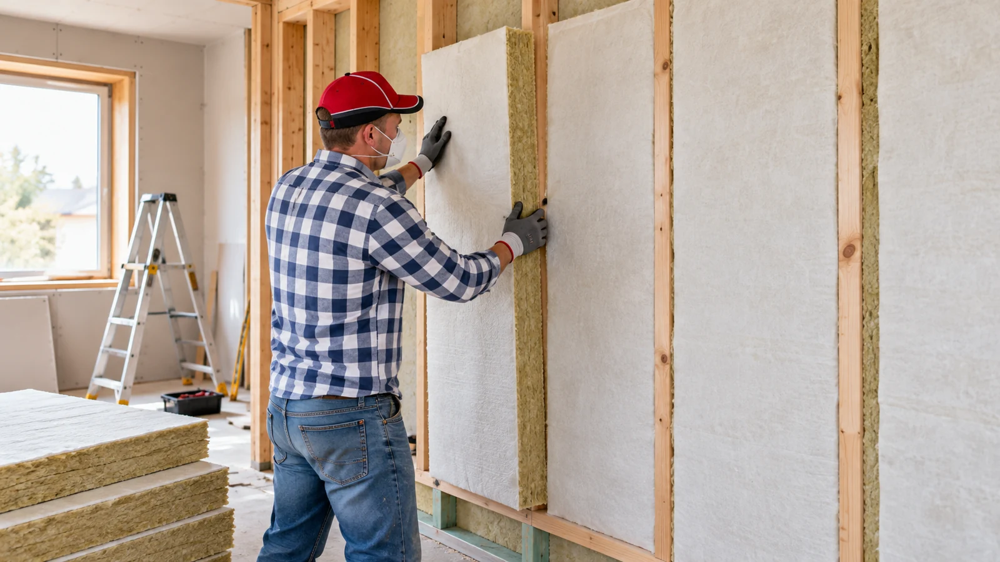
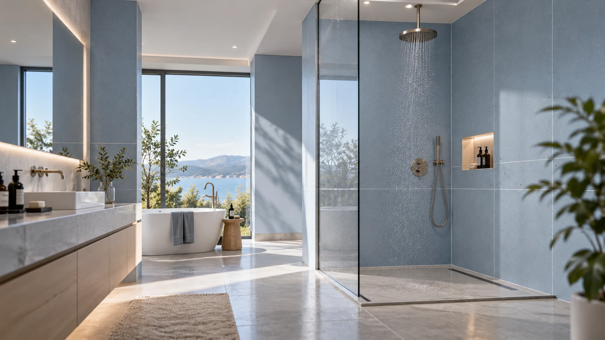

Residential Walls & Room Partitions
Smooth finishes · Everyday durability
Review this application
Review fiberglass facers for gypsum and mineral wool assemblies, considering surface quality, moisture exposure, bonding and production fit.
Choose an application to see its priorities and material directions.

Smooth finishes · Everyday durability
Review this application
Water exposure management · Surface protection
Review this application
Robust board finishes · Production consistency
Review this application
Insulation facing · Assembly compatibility
Review this application
Interior gypsum partitions need consistent surfaces and reliable facing integration for finishing and installation.
Match coated veil weight, texture and gypsum-core bonding to the board line.

Moisture-prone interiors require review of surface wetting, water exposure and the complete gypsum board system.
For suitable gypsum boards, consider water-repellent veil; verify substrate, detailing and system fit.

Pitched roof insulation requires moisture control, vapor permeability and dimensional stability to protect mineral wool.
Check water repellency, vapor permeability and lamination fit for pitched-roof mineral wool.

Mineral wool-filled partitions need facings matched to the core, production method and complete wall design.
Mineral-wool roof facer: wall use requires separate assembly review and testing.
SYSTEM NOTE: Moisture, acoustic, thermal, fire, impact, and other regulatory performance must be assessed using the complete wall or partition system and applicable testing. A facer alone does not establish system-level compliance.
Three selected fiberglass facer options for gypsum board production and mineral wool insulation systems, organized by substrate and functional need.

Coated gypsum facer for surface and board-line fit.
TYPICAL APPLICATIONS Residential interior walls · Office partitions · Schools · Commercial interiors

Water-repellent gypsum facer; verify surface-water fit.
TYPICAL APPLICATIONS Bathrooms · Kitchens · Utility spaces · Moisture-prone interior walls

Mineral wool roof facer. Wall use requires separate facer and system compatibility review.
PRIMARY APPLICATION Mineral wool roof insulation
POTENTIAL ADJACENT APPLICATION Interior mineral wool insulation assemblies — subject to technical approval and testing
Review facer finish, bonding, moisture needs and roll format; confirm specifications through samples.

Define surface color, coverage, coating consistency and the end-board finish.
Review water-repellent facers for moisture-prone gypsum boards.
Check gypsum slurry, lamination, drying and line-handling compatibility.
Confirm roll dimensions and packaging against line needs and availability.
Tell us about your gypsum board or mineral wool system, the intended installation environment, and the performance or manufacturing challenge you want to address. GRECHO can help review appropriate fiberglass facing options and sampling requirements.
Share your board application, facer direction and the samples or technical documents you want to review.